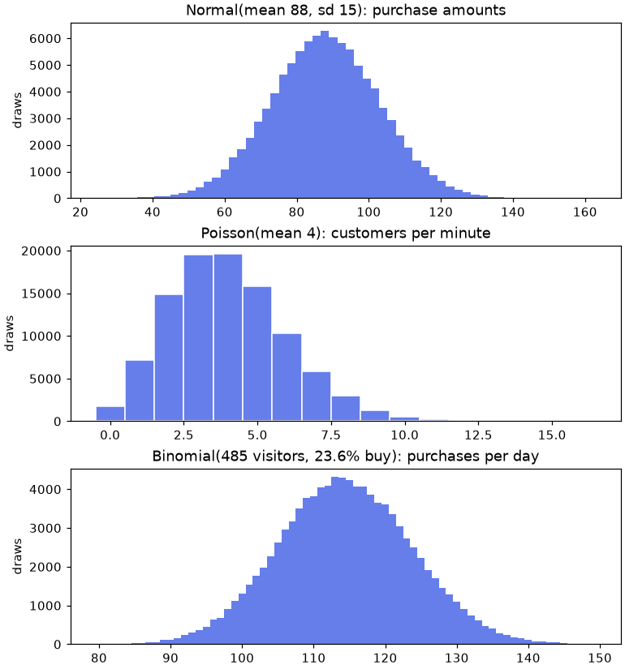
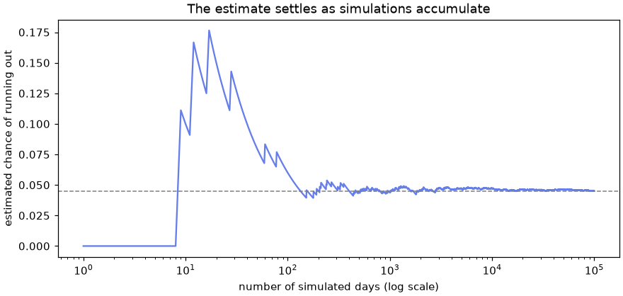
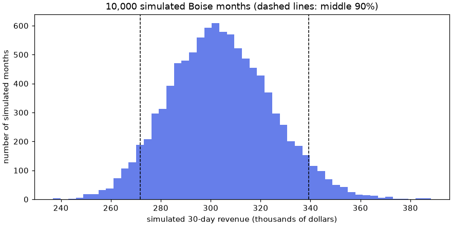

🎲 Lesson 1.4: Random Number Generation
Generate random numbers you can reproduce exactly, draw fair samples from real data, and answer "what could happen?" by simulating it thousands of times.
🎯 Learning Objectives
By the end of this lesson, you will be able to:
- Create a random number generator with
np.random.default_rngand draw floats, integers and arrays of any shape from it - Explain what a seed does, and structure your code so its random results can be reproduced
- Sample from an array with and without replacement, shuffle it, and split rows at random
- Draw from the normal, Poisson and binomial distributions and say what kind of quantity each one models
- Estimate a probability by simulation, and judge how far to trust the estimate and the model behind it
In This Lesson
🤔 Why Make Numbers Up?
It can seem odd for a course about real data to spend a lesson on invented numbers. In practice, random numbers are one of an analyst's most-used tools:
- Sampling. Pick 200 orders to check by hand, or split customers into two groups for an experiment, in a way nobody can accuse of being biased.
- Shuffling. Put rows in random order, or scramble labels to see what "no real difference" looks like.
- Simulation. When a question is too tangled for a formula ("what are the chances we run out of stock on Saturday?"), act it out thousands of times and count.
- Test data. Build an array with known properties to try your code on before the real data arrives.
The statistics module leans on all four. Ideas such as "how much would this average change if we collected the data again?" are hard to grasp from a formula and almost obvious once you have simulated them. This lesson gives you the machinery.
💡 Mental Model: The Book of Random Digits
Imagine an enormous book filled with digits that pass every test of randomness. You open it at some page and read off numbers as you need them. A computer's random numbers work like that book. They come from a fixed recipe that produces a sequence which looks random, so they are called pseudo-random.
The seed is the page you open at. Open at the same page tomorrow and you read the same numbers in the same order. That is not a weakness. It is the feature that lets someone else rerun your analysis and get your result.
🚀 Your First Generator
In NumPy you first create a generator object, by convention called rng (for "random number generator"), and then ask it for numbers. np.random.default_rng(42) creates one with the seed 42.
import numpy as np
rng = np.random.default_rng(42)
print(rng.random()) # one float, from 0 up to (not including) 1
print(rng.random(5)) # an array of fiveOutput
0.7739560485559633
[0.43887844 0.85859792 0.69736803 0.09417735 0.97562235]If you run these blocks in order in a fresh notebook, you will see exactly these numbers. That is the seed at work, and it is why a lesson about randomness can print its output.
Whole Numbers
rng.integers(low, high) draws whole numbers. Like range() and slicing, it leaves out the upper end, so a six-sided die is integers(1, 7).
print(rng.integers(1, 7, size=10)) # ten dice rolls: 1 to 6
print(rng.integers(0, 2, size=10)) # ten coin flips: 0 or 1
print(rng.integers(1, 6, size=10, endpoint=True)) # endpoint=True includes the 6Output
[5 5 5 5 4 1 6 3 4 3]
[0 1 1 1 0 1 1 0 0 0]
[1 4 6 1 6 5 2 4 1 5]Any Range, Any Shape
rng.uniform(low, high) draws floats spread evenly over a range of your choosing. Every drawing method takes a size argument, and size can be a shape tuple, so you can fill a whole table in one call.
print(rng.uniform(5, 15, size=4).round(2)) # four prices between $5 and $15
print(rng.integers(0, 100, size=(3, 4))) # a 3 x 4 tableOutput
[ 8.55 14.71 13.93 12.78]
[[75 19 36 46]
[49 4 54 15]
[74 68 92 74]]✅ One Call, Not a Loop
Asking for a million numbers with size=1_000_000 is the vectorized way to do it, for the same reasons as in Lesson 1.2. A Python loop that calls rng.random() a million times gives equally good numbers and takes far longer.
🌱 Seeds and Reproducibility
Two generators created with the same seed produce the same sequence. A different seed gives a different sequence.
a = np.random.default_rng(2024)
b = np.random.default_rng(2024)
c = np.random.default_rng(2025)
print(a.integers(0, 100, size=5))
print(b.integers(0, 100, size=5))
print(c.integers(0, 100, size=5))Output
[24 67 9 21 31]
[24 67 9 21 31]
[44 99 99 38 95]A generator moves forward each time you draw from it, like a bookmark moving through the book. Asking again gives the next numbers, not the same ones. To start over, create the generator again.
print(a.integers(0, 100, size=5)) # the next five: different
a = np.random.default_rng(2024) # back to the first page
print(a.integers(0, 100, size=5)) # the first five againOutput
[30 90 79 91 99]
[24 67 9 21 31]⚠️ Why Rerunning a Cell Changes Your Numbers
In a notebook, running a cell that draws from rng a second time moves the bookmark again, so you get new numbers. Nothing is broken. To reproduce a result, rerun from the cell that creates the generator (or use Restart and Run All). Reproducible means "same code, run from the top, same answer".
With no seed at all, NumPy takes fresh, unpredictable starting material from the operating system, and every run differs.
fresh = np.random.default_rng()
print(fresh.integers(0, 100, size=5))Output (your numbers will differ, and so will mine next time)
[80 73 42 59 86]How to Organize Random Code
- Create one generator near the top of the notebook or script, with a seed, and use it everywhere below.
- Pass it into functions that need randomness (
def simulate(rng, ...)), or pass a seed and create the generator inside. Either way the caller controls the randomness. - Do not create a new seeded generator inside a loop. You would open the book at the same page every time. This mistake is shown below.
- The seed's value does not matter. 42, 7 and 20240101 are equally good. What matters is that you write it down by putting it in the code.
💡 The Older Style You Will See in Other People's Code
Before the generator object existed, NumPy had one hidden, global generator that you seeded with np.random.seed(42) and drew from with functions such as np.random.rand(). Those functions still work, and a great many tutorials and answers online use them. The generator style taught here is the one NumPy recommends for new code: it is faster, its statistical quality is better, and because nothing is global, one part of a program cannot silently disturb another's random numbers.
| Older style (reading knowledge only) | Generator style (write this) |
|---|---|
np.random.seed(42) | rng = np.random.default_rng(42) |
np.random.rand(5) | rng.random(5) |
np.random.randint(1, 7, 10) | rng.integers(1, 7, size=10) |
np.random.randn(5) | rng.standard_normal(5) |
np.random.choice(x, 3) | rng.choice(x, size=3) |
np.random.shuffle(x) | rng.shuffle(x) |
🎯 Sampling and Shuffling
Drawing numbers from a range is one job. More often in data work you want to draw from your own values. That is rng.choice.
store_names = np.array(["Asheville", "Bend", "Boise", "Flagstaff"])
print(rng.choice(store_names, size=6)) # with replacement: repeats allowed
print(rng.choice(store_names, size=3, replace=False)) # without: three different storesOutput
['Bend' 'Flagstaff' 'Bend' 'Bend' 'Flagstaff' 'Bend']
['Bend' 'Flagstaff' 'Asheville']💡 With or Without Replacement?
Picture names on slips of paper in a hat. With replacement (the default), you put each slip back after reading it, so the same name can come up again. Use it when draws are independent events: dice, simulated days, visitors arriving. Without replacement (replace=False), a slip stays out once drawn. Use it to select distinct things: 200 orders to audit, 5 prize winners.
By default every value is equally likely. The p argument sets your own probabilities, one per value, adding up to 1. Boise gets about a third of Pinecrest's store visitors, so a simulated visitor should be more likely to be in Boise.
visits = rng.choice(store_names, size=10_000, p=[0.19, 0.24, 0.34, 0.23])
names, counts = np.unique(visits, return_counts=True)
print(names)
print(counts)Output
['Asheville' 'Bend' 'Boise' 'Flagstaff']
[1934 2408 3401 2257]The counts are close to 1,900, 2,400, 3,400 and 2,300 but not exactly equal to them. That gap between what the probabilities say and what a particular sample shows is called sampling variation, and learning to reason about it is most of what statistics is.
Shuffling
There are two ways to put an array in random order, and they differ in the way that matters most: one returns a new array and the other changes yours.
deck = np.arange(10)
mixed = rng.permutation(deck) # returns a shuffled COPY
print(mixed)
print(deck) # the original is untouched
rng.shuffle(deck) # shuffles IN PLACE and returns None
print(deck)Output
[7 1 4 5 3 2 9 0 6 8]
[0 1 2 3 4 5 6 7 8 9]
[3 2 9 4 7 0 6 5 1 8]Sampling Rows of Real Data
With parallel arrays (Lesson 1.2), the thing to sample is the row position. Draw positions once, then use them on every column, so the columns stay matched. rng.choice(n, ...) with a whole number n draws from 0 to n - 1.
def load(col, dtype=float):
"""Read one column of daily_sales.csv into an array."""
return np.genfromtxt("data/daily_sales.csv", delimiter=",",
skip_header=1, usecols=col, dtype=dtype)
dates = load(0, dtype="datetime64[D]")
stores = load(1, dtype=str)
visitors = load(2)
revenue = load(5)
n = revenue.size
picks = rng.choice(n, size=5, replace=False) # five different row positions
print(picks)
print(dates[picks])
print(stores[picks])
print(revenue[picks])Output
[1845 1242 952 2068 2800]
['2025-04-09' '2024-11-07' '2024-08-26' '2025-06-04' '2025-12-05']
['Boise' 'Bend' 'Flagstaff' 'Bend' 'Bend']
[8691.6 6285.66 4364.59 6640.19 nan]The last pick happens to be one of the six store-days with no revenue recorded. A random sample shows you your data as it is, gaps included.
A random split works the same way: shuffle all the positions, then cut the shuffled list in two. Here 80% of the rows go to one group and 20% to the other, a pattern you will meet again whenever a model is tested on data it has not seen.
order = rng.permutation(n)
cut = int(n * 0.8)
group_a, group_b = order[:cut], order[cut:]
print(group_a.size, group_b.size)
print(np.nanmean(revenue[group_a]).round(2), np.nanmean(revenue[group_b]).round(2))Output
2322 581
7448.95 7379.26The two groups have similar averages, as random groups should, and again not identical ones.
📊 Distributions: Shaped Randomness
A die gives every face the same chance. Most real quantities are not like that: daily revenue clusters around a typical value, with very high and very low days being rare. A distribution describes which values are likely and which are not. The generator can draw from dozens of them. Three cover a great deal of everyday work, and Module 4 studies them properly. Here the aim is to meet them and see their shapes.
Normal: Measurements Around a Typical Value
The bell curve. You give it a center (loc, the mean) and a spread (scale, the standard deviation). About 95% of draws land within two standard deviations of the mean.
baskets = rng.normal(loc=88, scale=15, size=100_000) # purchase amounts, roughly
print(baskets[:6].round(2))
print(baskets.mean().round(2), baskets.std().round(2))
print(((baskets > 58) & (baskets < 118)).mean()) # share within 2 standard deviationsOutput
[ 94.93 82.35 112.71 118.26 101.11 111.12]
87.95 15.05
0.95331Poisson: Counts of Things That Happen at Some Average Rate
How many customers reach the register in a minute, how many returns arrive in a day. You give it the average count (lam), and it returns whole numbers that are never negative.
arrivals = rng.poisson(lam=4, size=100_000) # customers per minute at the register
print(arrivals[:15])
print(arrivals.mean().round(3), arrivals.min(), arrivals.max())Output
[5 3 1 1 4 3 1 2 2 5 6 7 5 2 7]
3.997 0 16Binomial: Successes Out of a Number of Tries
Of n visitors, each of whom buys with probability p, how many buy? Boise averages about 485 visitors a day and, as you found in the Lesson 1.2 scorecard, about 23.6% of visitors make a purchase.
buyers = rng.binomial(n=485, p=0.236, size=100_000) # purchases on a 485-visitor day
print(buyers[:10])
print(buyers.mean().round(2), 485 * 0.236)Output
[112 112 121 113 116 132 124 113 115 92]
114.45 114.46In all three cases the average of 100,000 draws sits very close to the value the distribution was told to have. Now look at the shapes. (Plotting has its own module. For now, type the chart code as given.)
import matplotlib.pyplot as plt
fig, axes = plt.subplots(3, 1, figsize=(7, 7.5), layout="constrained")
axes[0].hist(baskets, bins=60, color="#667eea")
axes[0].set_title("Normal(mean 88, sd 15): purchase amounts")
axes[1].hist(arrivals, bins=np.arange(-0.5, 17.5, 1), color="#667eea", edgecolor="white")
axes[1].set_title("Poisson(mean 4): customers per minute")
axes[2].hist(buyers, bins=np.arange(79.5, 150.5, 1), color="#667eea")
axes[2].set_title("Binomial(485 visitors, 23.6% buy): purchases per day")
for ax in axes:
ax.set_ylabel("draws")
plt.show()
| Method | Draws | Typical use |
|---|---|---|
rng.random(size) | Floats from 0 up to 1, evenly | Building blocks, random yes/no with rng.random(n) < p |
rng.uniform(low, high, size) | Floats evenly over a range | "Anywhere between" quantities |
rng.integers(low, high, size) | Whole numbers, upper end excluded | Dice, random positions, ids |
rng.normal(loc, scale, size) | Bell curve | Measurements, errors, noise |
rng.poisson(lam, size) | Counts, zero or more | Arrivals, events per period |
rng.binomial(n, p, size) | Successes in n tries | Conversions, defects, survey answers |
rng.choice(values, size) | Your own values | Samples of real data, resampling |
🔮 Simulation: Asking "What If?"
Here is a small, real kind of question. Boise plans to hand a free gift bag to every customer who buys something on Saturday, and has 130 bags. What is the chance the bags run out?
You could look for a formula. Or you can do what the question literally describes: live through a great many Saturdays and count how often more than 130 people buy. This approach is called Monte Carlo simulation, and it has three steps.
Model. Use the binomial from the last section: 485 visitors, each buying with probability 0.236. Repeat. Ask for 100,000 days. Count. A mask and its mean, exactly as in Lesson 1.2.
days = rng.binomial(n=485, p=0.236, size=100_000)
print(days[:10])
ran_out = days > 130
print(ran_out.sum(), "of", days.size, "simulated days")
print(f"estimated chance of running out: {ran_out.mean():.1%}")Output
[114 102 108 110 107 114 127 106 135 123]
4516 of 100000 simulated days
estimated chance of running out: 4.5%How Many Simulations Are Enough?
An estimate from a simulation is itself a little random. Run the same estimate with different numbers of simulated days and watch what happens.
for n_days in [100, 1_000, 10_000, 100_000, 1_000_000]:
sim = rng.binomial(n=485, p=0.236, size=n_days)
print(f"{n_days:>9,} days: {(sim > 130).mean():.4f}")Output
100 days: 0.0500
1,000 days: 0.0460
10,000 days: 0.0472
100,000 days: 0.0454
1,000,000 days: 0.0445With 100 days the estimate can only move in steps of 0.01, and a rerun could easily give 0.02 or 0.08. As the number of simulations grows, the estimate settles down toward one value. This is the law of large numbers: the average of more and more random draws gets closer and closer to the true underlying value. The chart below follows a single run of 100,000 days and shows the estimate after each one.
running = ran_out.cumsum() / np.arange(1, ran_out.size + 1) # estimate after 1, 2, 3, ... days
fig, ax = plt.subplots(figsize=(8, 3.8), layout="constrained")
ax.plot(np.arange(1, ran_out.size + 1), running, color="#667eea")
ax.axhline(ran_out.mean(), color="gray", linestyle="--", linewidth=1)
ax.set_xscale("log")
ax.set_xlabel("number of simulated days (log scale)")
ax.set_ylabel("estimated chance of running out")
ax.set_title("The estimate settles as simulations accumulate")
plt.show()
The Part No Amount of Simulation Fixes
That estimate is precise. Is it right? The model assumed every day has exactly 485 visitors. Real days do not: Boise's door counter ranges from 177 to 1,164. You have the real visitor counts, so improve the model: draw each simulated day's visitor count from the real ones with rng.choice, then draw the buyers for that many visitors. rng.binomial accepts an array for n and handles each element in turn.
boise_visitors = visitors[stores == "Boise"].astype(int)
print(boise_visitors.min(), boise_visitors.max(), boise_visitors.mean().round(1))
sim_visitors = rng.choice(boise_visitors, size=100_000) # a random real day's visitor count
sim_buyers = rng.binomial(n=sim_visitors, p=0.236) # buyers among that many visitors
print(f"estimated chance of running out: {(sim_buyers > 130).mean():.1%}")Output
177 1164 485.2
estimated chance of running out: 27.9%⚠️ A Precise Answer to the Wrong Question
The first model said bags run out on about 1 day in 22. The better model says more than 1 day in 4. Both estimates were computed from 100,000 simulations and both are stable to the first decimal place. The difference comes entirely from the assumption about visitors. More simulations make an estimate more precise. Only a better model makes it more true. (And the plan was for a Saturday, the busiest day of the week, so even this model is too kind. Exercise 3 picks that up.)
⚠️ Common Mistakes
Random code has a special hazard: wrong output looks just as random as right output. These are the mistakes worth learning to recognize on sight.
1. Forgetting That the Upper End Is Left Out
check = np.random.default_rng(0)
rolls = check.integers(1, 6, size=10_000) # meant to be a six-sided die
print(rolls.min(), rolls.max())Output (no six in 10,000 rolls)
1 5What happened: integers(1, 6) draws from 1 to 5, in the same way that range(1, 6) stops at 5. No error, just a die with five faces. Fix: integers(1, 7) or integers(1, 6, endpoint=True). Checking the minimum and maximum of a big batch, as here, catches it at once.
2. Asking for More Distinct Items Than Exist
winners = rng.choice(store_names, size=6, replace=False)Error
ValueError: Cannot take a larger sample than population when replace is FalseWhat it means: there are four store names, and you cannot draw six different ones. Fix: ask for at most as many as there are, or allow repeats by leaving replace at its default.
3. Probabilities That Do Not Add Up to 1
visits = rng.choice(store_names, size=10, p=[0.2, 0.2, 0.3, 0.2])Error
ValueError: Probabilities do not sum to 1. See Notes section of docstring for more information.What it means: these add up to 0.9, so NumPy cannot tell what happens the other 10% of the time. Fix: correct the numbers, or if you are starting from counts or weights, divide by their total: weights / weights.sum().
4. Assigning the Result of shuffle
cards = np.arange(5)
cards = rng.shuffle(cards)
print(cards)Output (the array is gone)
NoneWhat happened: shuffle rearranges the array in place and returns None. Assigning that result back replaced your array with None. Fix: call rng.shuffle(cards) on a line of its own, or use cards = rng.permutation(cards), which does return the shuffled array.
5. Re-creating the Generator Inside a Loop
for day in range(3):
loop_rng = np.random.default_rng(42) # same seed, every time around
print(loop_rng.integers(100, 200, size=4))Output (three identical "random" days)
[108 177 165 143]
[108 177 165 143]
[108 177 165 143]What happened: each pass opened the book at page 42 again, so every "day" is the same day. In a simulation this silently turns 10,000 runs into one run repeated 10,000 times. Fix: create the generator once, before the loop.
loop_rng = np.random.default_rng(42)
for day in range(3):
print(loop_rng.integers(100, 200, size=4))Output
[108 177 165 143]
[143 185 108 169]
[120 109 152 197]6. Seeding the Old Way and Drawing the New Way
np.random.seed(42)
first = np.random.default_rng().random()
np.random.seed(42)
second = np.random.default_rng().random()
print(first == second)Output
FalseWhat happened: np.random.seed seeds only the old, global generator. A generator made by default_rng() with no argument ignores it and starts somewhere unpredictable, so the "seeded" code is not reproducible. Fix: give the seed to the generator you actually draw from: np.random.default_rng(42).
🛠️ Project: How Much Could a Month Vary?
Boise's manager is setting a monthly revenue target and asks: "If next month is made of ordinary days like the ones we have had, what range of totals should I expect?" You will answer by building 10,000 possible months out of real Boise days, drawn at random. Then you will do what a careful analyst does next and check the simulation against what really happened. Work in a new notebook called lesson_1_4_project or a script called month_simulation.py. Allow about 35 minutes.
🛠️ Step 1: Collect Boise's real days (5 min)
Load the columns, keep the Boise rows, and drop the one day with no revenue recorded. Create your generator here, once, with a seed.
import numpy as np
import matplotlib.pyplot as plt
def load(col, dtype=float):
return np.genfromtxt("data/daily_sales.csv", delimiter=",",
skip_header=1, usecols=col, dtype=dtype)
dates = load(0, dtype="datetime64[D]")
stores = load(1, dtype=str)
revenue = load(5)
rng = np.random.default_rng(42)
is_boise = (stores == "Boise") & ~np.isnan(revenue)
boise = revenue[is_boise]
print(boise.size, "days")
print(f"mean ${boise.mean():,.2f} smallest ${boise.min():,.2f} largest ${boise.max():,.2f}")Output
726 days
mean $10,144.21 smallest $3,015.46 largest $27,677.10🛠️ Step 2: Simulate one month (5 min)
A simulated month is 30 days drawn at random from the real ones, with replacement (the same real day may be drawn twice, since each draw stands for "a day like that one"). Its total is one possible month. Draw two months to see that they differ.
month_1 = rng.choice(boise, size=30)
month_2 = rng.choice(boise, size=30)
print(month_1[:5])
print(f"month 1 total: ${month_1.sum():,.2f}")
print(f"month 2 total: ${month_2.sum():,.2f}")Output
[ 6203.18 10170.04 6327.65 7382.28 10452.25]
month 1 total: $324,963.33
month 2 total: $303,054.24🛠️ Step 3: Simulate 10,000 months at once (7 min)
Ask for a table of 10,000 rows and 30 columns, one row per month, and sum along axis=1 to collapse the days. Then describe the totals. np.percentile with 5 and 95 gives the range that holds the middle 90% of simulated months.
sims = rng.choice(boise, size=(10_000, 30))
months = sims.sum(axis=1)
print(sims.shape, months.shape)
low, mid, high = np.percentile(months, [5, 50, 95])
print(f"average month : ${months.mean():>11,.2f}")
print(f"typical spread: ${months.std():>11,.2f} (standard deviation)")
print(f"middle 90% : ${low:,.0f} to ${high:,.0f}")Output
(10000, 30) (10000,)
average month : $ 304,044.31
typical spread: $ 20,480.91 (standard deviation)
middle 90% : $271,698 to $339,193🛠️ Step 4: Answer the manager's questions (5 min)
Any "what is the chance that..." question is now the mean of a mask.
print(f"chance of a month below $280,000: {(months < 280_000).mean():.1%}")
print(f"chance of a month above $330,000: {(months > 330_000).mean():.1%}")
print(f"a target that 80% of months would beat: ${np.percentile(months, 20):,.0f}")Output
chance of a month below $280,000: 11.8%
chance of a month above $330,000: 10.5%
a target that 80% of months would beat: $286,476🛠️ Step 5: Draw the 10,000 months (5 min)
fig, ax = plt.subplots(figsize=(8, 4), layout="constrained")
ax.hist(months / 1000, bins=50, color="#667eea")
ax.axvline(low / 1000, color="black", linestyle="--", linewidth=1)
ax.axvline(high / 1000, color="black", linestyle="--", linewidth=1)
ax.set_xlabel("simulated 30-day revenue (thousands of dollars)")
ax.set_ylabel("number of simulated months")
ax.set_title("10,000 simulated Boise months (dashed lines: middle 90%)")
plt.show()
🛠️ Step 6: Check that it is reproducible, and how much it wobbles (4 min)
Wrap the simulation in a function that takes a seed. The same seed must give the same answer. Different seeds show how much the estimate itself moves.
def simulate_months(seed, n_months=10_000, n_days=30):
rng = np.random.default_rng(seed)
return rng.choice(boise, size=(n_months, n_days)).sum(axis=1)
print(np.array_equal(simulate_months(7), simulate_months(7)))
for seed in [1, 2, 3]:
print(seed, f"{(simulate_months(seed) < 280_000).mean():.3f}")Output
True
1 0.114
2 0.114
3 0.112These three estimates and the 11.8% from Step 4 agree to within about half a percentage point. That is the precision 10,000 simulations buys, so report "about 11 or 12%", not "11.79%".
🛠️ Step 7: Check the model against reality (5 min)
You have 24 real calendar months of Boise revenue. Total each one and compare their range with the simulation's. Converting dates to datetime64[M] keeps only the year and month, which makes a ready-made month label for a mask.
month_label = dates.astype("datetime64[M]")
real = np.array([np.nansum(revenue[(stores == "Boise") & (month_label == m)])
for m in np.unique(month_label)])
print(real.size, "real months")
print(f"real months : ${real.min():,.0f} to ${real.max():,.0f}")
print(f"simulated (90%) : ${low:,.0f} to ${high:,.0f}")
print(f"real months inside the simulated 90% range: {((real > low) & (real < high)).sum()} of {real.size}")Output
24 real months
real months : $196,327 to $397,246
simulated (90%) : $271,698 to $339,193
real months inside the simulated 90% range: 10 of 24If the simulation described reality, about 22 of the 24 real months would fall inside its 90% range. Far fewer do. The real months spread much more widely, and the reason is in the model: drawing days independently assumes any day can follow any other. Real days come in seasons. A December is made almost entirely of busy days, and a February of quiet ones, so real totals swing further than a random mixture ever could.
The simulation was not wasted. It answers the question it was given ("a month of days drawn from the whole two years") and its failure against the real months is itself a finding: season matters more than day-to-day luck. A better model would draw days from the same time of year. Catching this is the most valuable step of the project.
✅ Project Completion Checklist
- One seeded generator is created at the top and used for every draw
boiseholds 726 real days with no missing valuessimshas shape(10000, 30)andmonthshas shape(10000,), with no loop- You can state the middle 90% range of simulated months and the chance of a month below $280,000
simulate_months(7)returns identical results when called twice- You compared the simulation with the 24 real months and can explain in a sentence why they disagree
🏋️ Hands-on Exercises
Each solution creates its own seeded generator, so your output will match if you use the same seed. Try a different seed afterward and see what changes and what does not.
🏋️ Exercise 1: Two Dice
Roll two six-sided dice 100,000 times (use np.random.default_rng(1) and one call with size=(100_000, 2)). Add each pair. (a) What fraction of rolls total 7? Compare with the exact answer, 1/6. (b) Which total is most common, and which are least common?
💡 Hint
Sum along axis=1 to add each pair. np.unique(..., return_counts=True) tallies the totals, and argmax on the counts finds the most common.
✅ Solution
rng = np.random.default_rng(1)
dice = rng.integers(1, 7, size=(100_000, 2))
totals = dice.sum(axis=1)
print((totals == 7).mean(), 1 / 6)
values, counts = np.unique(totals, return_counts=True)
print(values)
print(counts)
print("most common:", values[counts.argmax()], " least common:", values[counts.argmin()])Output
0.16619 0.16666666666666666
[ 2 3 4 5 6 7 8 9 10 11 12]
[ 2747 5634 8577 10999 13718 16619 13974 11198 8165 5622 2747]
most common: 7 least common: 2Seven is the most common total, because more pairs add up to it than to any other number. The rarest totals are 2 and 12, with one pair each. (In this run they happen to tie exactly, and argmin reports the first of a tie.)
🏋️ Exercise 2: An Audit Sample
Using dates, stores and revenue from the project and np.random.default_rng(2): (a) choose 200 different store-days at random for an audit. (b) How many of the 200 come from each store? (c) Is the sample's mean revenue close to the mean of all store-days? Use the nan-aware mean.
💡 Hint
Sample row positions with rng.choice(revenue.size, size=200, replace=False), then use those positions on each array.
✅ Solution
rng = np.random.default_rng(2)
audit = rng.choice(revenue.size, size=200, replace=False)
print(np.unique(audit).size) # 200 distinct positions
names, counts = np.unique(stores[audit], return_counts=True)
print(names, counts)
print(np.nanmean(revenue[audit]).round(2), np.nanmean(revenue).round(2))Output
200
['Asheville' 'Bend' 'Boise' 'Flagstaff'] [55 57 41 47]
6987.45 7435.04Each store has about a quarter of the rows, so each gets roughly 50 of the 200, and the sample mean is within a few hundred dollars of the overall mean without matching it. Both are sampling variation in action.
🏋️ Exercise 3: Gift Bags, on a Saturday
The gift-bag plan was for a Saturday. Improve the model once more: draw simulated visitor counts only from Boise's real Saturdays. (January 1, 2024, the first row of the file, was a Monday, so (dates - dates[0]).astype(int) % 7 gives 5 for Saturday.) With np.random.default_rng(3) and 100,000 simulated Saturdays, estimate the chance that 130 bags run out. Then find how many bags would be needed to cover 95% of Saturdays.
💡 Hint
Build a mask for "Boise and Saturday" and apply it to visitors. For the second part, the 95th percentile of the simulated buyer counts is the number of bags that is enough 95% of the time.
✅ Solution
rng = np.random.default_rng(3)
visitors = load(2)
weekday = (dates - dates[0]).astype(int) % 7
sat_visitors = visitors[(stores == "Boise") & (weekday == 5)].astype(int)
print(sat_visitors.size, "Saturdays, mean visitors", sat_visitors.mean().round(1))
sim_buyers = rng.binomial(n=rng.choice(sat_visitors, size=100_000), p=0.236)
print(f"chance 130 bags run out: {(sim_buyers > 130).mean():.1%}")
print("bags to cover 95% of Saturdays:", int(np.percentile(sim_buyers, 95)))Output
104 Saturdays, mean visitors 718.1
chance 130 bags run out: 82.3%
bags to cover 95% of Saturdays: 245On Saturdays, 130 bags run out more than four times in five. Three models, three very different answers, and each improvement came from using more of what the data already knew.
🏋️ Exercise 4: Could Shuffling Explain It? (Stretch)
Bend's mean daily revenue is a little higher than Flagstaff's. Is that a real difference between the stores, or the kind of gap that appears by chance? Test it by shuffling. Put both stores' revenues (missing values removed) in one array, shuffle it, call the first 721 values "Bend" and the rest "Flagstaff", and record the difference in means. Repeat 5,000 times with np.random.default_rng(4). In what fraction of shuffles is the difference at least as large as the real one, in either direction?
💡 Hint
A loop over 5,000 shuffles is fine here: each pass does vectorized work on about 1,400 values. Collect the differences in a list, convert to an array, and compare np.abs(diffs) with the absolute real difference.
✅ Solution
rng = np.random.default_rng(4)
bend = revenue[(stores == "Bend") & ~np.isnan(revenue)]
flagstaff = revenue[(stores == "Flagstaff") & ~np.isnan(revenue)]
real_diff = bend.mean() - flagstaff.mean()
print(bend.size, flagstaff.size, round(real_diff, 2))
pooled = np.concatenate([bend, flagstaff])
diffs = []
for _ in range(5_000):
mixed = rng.permutation(pooled)
diffs.append(mixed[:bend.size].mean() - mixed[bend.size:].mean())
diffs = np.array(diffs)
print(f"shuffled differences: typical size ${np.abs(diffs).mean():.2f}")
print(f"share at least as large as the real one: {(np.abs(diffs) >= abs(real_diff)).mean():.3f}")Output
721 724 108.13
shuffled differences: typical size $108.40
share at least as large as the real one: 0.423Purely random relabeling produces a gap as big as the real one in a large share of shuffles. So the data gives no good reason to believe Bend truly outsells Flagstaff per day. You have just run a permutation test, and that final fraction is a p-value. Lesson 4.5 builds the full idea, and you already know its engine.
🎯 Quick Quiz
🎯 Check Your Understanding
Question 1: What does this print?
r1 = np.random.default_rng(7)
r2 = np.random.default_rng(7)
print(np.array_equal(r1.integers(0, 100, size=3), r2.integers(0, 100, size=3)))Question 2: Which values can rng.integers(1, 7, size=5) produce?
Question 3: skus is an array of 242 product codes. Which line picks 5 different products at random?
Question 4: You create rng = np.random.default_rng(42) in one notebook cell. In the next cell you run print(rng.random()) three times and see three different numbers. Why?
Question 5: A simulation of 100 days estimates a probability as 0.07. The same simulation with 1,000,000 days gives 0.0449. What is the best reading?
❓ Common Questions at This Stage
If the numbers come from a recipe, are they really random?
They are pseudo-random: completely determined by the seed, yet statistically indistinguishable from random for the purposes of sampling and simulation. That is exactly what analysis needs. It is not what security needs. Never use NumPy's generator (or Python's random module) for passwords, tokens or anything an attacker might try to predict. Python's secrets module exists for that.
Which seed should I use? Is 42 special?
No seed is better than another. 42 is a running joke among programmers and nothing more. Pick any whole number and keep it in the code. One thing to avoid: trying several seeds and keeping the one whose result you like best. That is choosing your answer, and it defeats the purpose of drawing at random.
Should I always set a seed?
Set one whenever someone (including you, next month) may need to reproduce the output: reports, published charts, tests, teaching material. While exploring, it can be healthy to rerun with a few different seeds, or none, to see how much your result depends on the luck of the draw. If the conclusion changes with the seed, you do not have a conclusion yet.
Will the same seed give the same numbers on another computer, or next year?
On another computer with the same version of NumPy, yes. Across NumPy versions, usually but not by promise: the project allows itself to improve the algorithms behind a generator's methods, which can change the numbers a seed produces. For work that must be reproduced exactly much later, record the NumPy version alongside the seed. The requirements.txt file from Lesson 0.1 does that job.
What is the difference between rng.normal and rng.standard_normal?
rng.standard_normal(size) draws from the bell curve with mean 0 and standard deviation 1. rng.normal(loc, scale, size) lets you choose both. They are related by one line of broadcasting: loc + scale * rng.standard_normal(size).
🌟 Going Further: Bonus Challenge
Fix the flaw the project found. Build a simulation of next December at Boise by drawing 31 days only from the real December days (use dates.astype("datetime64[M]") and a mask for the two Decembers in the data, or compare the month number). Simulate 10,000 Decembers and report the middle 90% range. Do the two real Decembers fall inside it? Then think about what this model still ignores (hint: Boise's revenue grew from 2024 to 2025) and write a sentence in your journal about how you might handle that.
📓 Learning Journal
Take five minutes to write in your learning journal (the journal.md file you started in Lesson 0.1, or a paper notebook). Jot down:
- Key concepts you learned today
- Techniques that clicked (and the ones that have not, yet)
- Questions or confusion to come back to
- Ideas to try on your own
- Progress and feelings: how did this lesson go for you?
✍️ This lesson's prompt: The gift-bag question got three different answers from three models. In your own words, what is the difference between an estimate being precise and being right? Then think of a "what are the chances?" question from your own work or life, and sketch the three steps (model, repeat, count) you would use to simulate it. What assumption in your model worries you most?
📝 Lesson Summary
🎓 Key Takeaways
- Create a generator with
rng = np.random.default_rng(seed)and draw everything from it; the oldernp.random.seedstyle is for reading, not writing - A seed fixes where the sequence starts; the generator then moves forward with every draw
- Reproducible means: same code, run from the top, same result. Create the generator once, never inside a loop
rng.integersleaves out the upper end;sizecan be a shaperng.choicesamples your own values, with replacement by default;replace=Falsegives distinct items;psets probabilitiesrng.permutationreturns a shuffled copy;rng.shuffleworks in place and returnsNone- Normal for measurements, Poisson for counts of events, binomial for successes out of n tries
- Monte Carlo simulation: model one case with random draws, repeat many times, count
- More simulations make an estimate more precise; only a better model makes it more true
🏆 What You've Accomplished
- You produced random numbers that match this page digit for digit, and can explain why
- You drew a random audit sample and a random 80/20 split of real rows, keeping parallel arrays matched
- You drew 100,000 values from three distributions and saw their shapes
- You estimated a probability by simulation and watched the law of large numbers settle it
- You simulated 10,000 months in one line, then tested your model against 24 real months and found its blind spot
🔭 Looking Ahead
One piece of NumPy remains before pandas. In Lesson 1.5: Linear Algebra Essentials you will meet the @ operator that Lesson 1.2 promised: dot products, multiplying a table by a set of weights, solving for unknowns, measuring how far apart two rows of numbers are, and fitting a straight line through data, which is the first step toward regression. No proofs, only the parts an analyst uses.
📋 Before the Next Lesson
- Keep your project notebook. The idea of resampling real data returns in Module 4 under the name "bootstrap".
- Rerun your project with a different seed. Which printed numbers change, and by how much? Which conclusions change?
- A warm-up for Lesson 1.5: an order has 2 tents at $299.95, 1 stove at $82.95 and 3 mugs at $24.50. Compute the total with two arrays and
(quantities * prices).sum(). That sum of products has a name, and it is where the next lesson starts.
🌱 Encouragement for the Journey
Today you did something that takes many people a long time to become comfortable with: you built a model, got a confident answer from it, and then went looking for evidence that it was wrong. And when you found some, you learned more from the miss than from the estimate. That instinct, to check a tidy result against reality, matters more than any function in this lesson. If distributions still feel like a blur of names, do not worry. You will meet each of them again, slowly, in Module 4, and you will already know how to make them appear on demand.